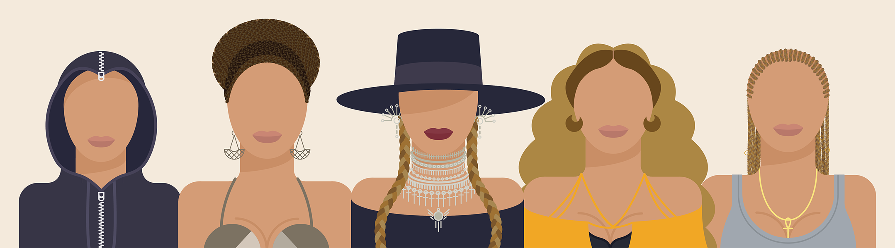

As part of my ‘Creative Entrepreneurship’ module in university I was tasked with creating a set of 12 icons that could possibly be sold to a company or used to make money in some way.
I originally started brainstorming icon set ideas thinking of ideas that could be used for apps or websites but nothing very original or inspiring to myself came to mind. I then started to brainstorm my own interests and hobbies to inspire more creative and out of the box thinking and I started to think about music and my favourite singer (Beyoncé).
In April of 2016 Beyoncé dropped Lemonade, her sixth . album, 12 tracks, accompanied by an hour-long film with a video for all 12 songs (12 videos, 12 icons... see my thinking?). Lemonade is a record breaking critically acclaimed piece of art that sold milions world wide and the associated tour grossed over $250 million. Lemonade is clearly an extremely profitable force so why not jump on the bandwagon!
Finally I decided to give the app a brand to showcase its full potential. I created a logo for the app store icon and a word mark.
I was very pleased with how the final icons looked, my colour scheme was strong and works well with throughought. No icon looks out of place when they are altogether. Looking forward I would like to start to get merchandise made with these icons to sell.
